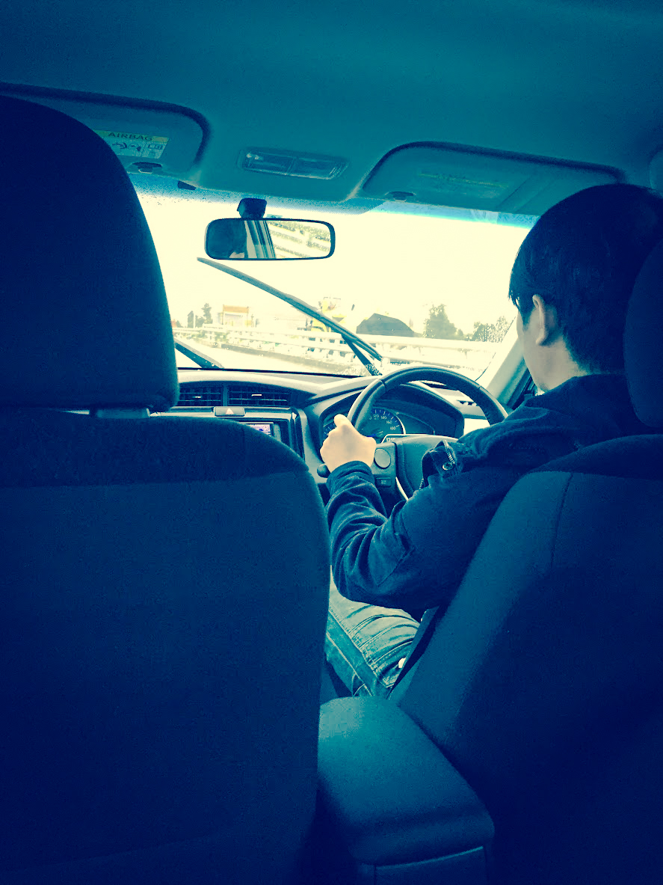
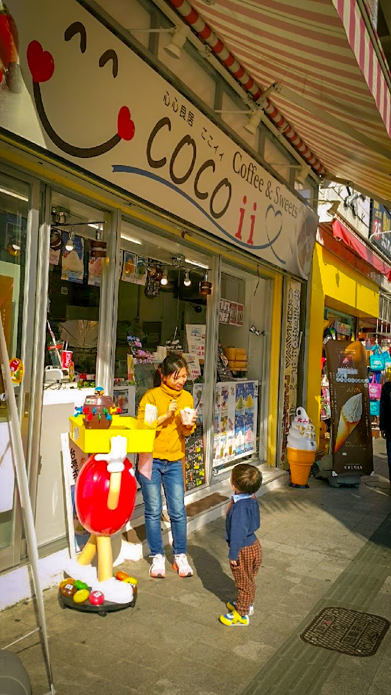

-
FB 撰寫日期:2015.12.14
漫遊沖繩心得筆記
首先要感謝小妹，沒有她的規劃與精打細算，也就沒有漫(累)遊(死)沖(老)繩(爸)的行程XD。 這次的旅途很臨時，雖然小妹一直有做功課，但我先丟出了個難題:
- 年假請的過、工作有空檔。(通常年底會忙一點，包括我)
- 總花費(四天三夜食宿、來回機票、租車、油資、停車費、wifi、景點門票等等)必須在23k以內，因為今年存的國外旅遊基金訂在80K左右(兩人跟團一次的平均費用，事實上若跟團加上小朋友，會來到120K)，4月大阪與10月香港約莫花了57K。
工作有提前趕進度、兩大一小"23k遊沖繩"規劃後達成A_A 於是我們就在一兩個禮拜內做好全部功課~整裝出發!!
切入心得主題:
- 沖繩真的好玩、好吃、好買又好便宜。
- 開車右駕不難、只是要專注於習慣的轉換(多數人發生事故都是左前方擦撞)。
- 租車我們是選OTS有附中文導航，本來想自己google map，但直接用它比較不會分心，準確度極高!!去到各景點請好先查好電話或mapcode。
- 日本人開車很懂得禮讓(大多車道偏窄，單線道不少)。
- 多數景點都有停車場，那霸市區內不能隨意停車，停車場會收費。
- 感覺油電車蠻省油(從南開到北來回，中間折返了一次中短程，只用了兩格，還車時需加滿油，花了台幣383元的油資)
- 高速公路(自動車道)限速80(超過95會開罰)，收費分一般車道與ETC，一般車道入口機器取票，出口人工給票與收費。
- 任何地方幾乎都有無障礙坡道+電梯，對老人與小孩+推車都很友善(我好像只有搬過兩次10階梯內的樓梯，某景點的建築物裡)。
- 很多地方都有中文解說(餐廳MENU、景點DM...等等)
- 沖繩的單軌電車(捷運)只有兩個車廂，人多時拖著行李或推車會很擠XD
- 單軌電車只到空港的國內線、要到國際線航廈可走路或搭接駁車，另LCC航廈(廉價航運航廈，屬於管制區域，航空公司為香草與樂桃)只限定搭乘接駁車或租車公司的接駁車進出。
- 行程搭配得宜，可以只租了兩天車(48小時)，最後一天都在那霸市區搭乘電車趴趴走，可以節省一天租車費。
- 購買電車一日券(一張700日圓)可以在24小時內無限搭乘(我們還用到隔天坐回那霸機場)
額外收穫:
- 兩人分工越來越上手，各自專攻強項(比價、訂房、規劃行程、google資料、開車須知與規則...等)
- 平常讓靖騰看"波力"發揮效果，自動坐好兒童座椅並要求扣上安全帶。
- 自助花費真的很省、三次抵一次!! 最主要還能帶著靖騰，似乎回不去了A__A
最後再次感謝小妹的貢獻^^，除了上機率大幅提升，回程還意外升等商務艙初體驗 ^+++^
# 超人老爸繼續努力存旅費XD，期待明年囉!!
- 
第一次在國外開車，還是右駕~ 必須認真專心!!
# 日本沖繩－自駕
-
第一站得先吃飽~來到人氣小店滿座，香氣把胃口喚醒。
# 日本沖繩－那霸·在地食堂
-
旅伴就緒，今天由我們掌舵。
# 日本沖繩－那霸
-
下雨了也澆不熄來沖繩的好心情。
# 日本沖繩－雨天小憩
-
把衣服套成頭巾，笑鬧滿車廂。
# 日本沖繩－自駕途中
-
哇~~~靖騰最喜歡的溜滑梯，開心地大叫著。
# 海洋博公園溜滑梯
-
古城石垣靜默，時光在指尖流過。
# 海洋博公園城跡石牆
-
玩累了~父子倆躺上藍色大網，微風把疲憊吹走。
# 海洋博公園兒童繩網攀爬區
-
水霧瀰漫的廣場，一大一小張開「翅膀」。
# 海洋博公園文化館前的廣場
-
這一碗真的是太美味了!!海葡萄配鮭珠與鮪泥~滿嘴還是當時那個味。
# 海葡萄丼
-
開車隨意繞~突然在山上遇到一間小店，晚餐就決定是你了!
# 山間裡的小店
-
預備備~~~~~~
# 日本沖繩－那覇·國際通 Kokusai-dori
-

和潮流公仔肩併肩，照片也要很有型。
# 日本沖繩－那覇·國際通·趣味商店
-
燈燈燈燈~國際巨星登場!!
# 日本沖繩－那覇·燒肉餐館
-

門口先來一張，熱騰騰的暖暮拉麵必吃清單。
# 日本沖繩－那覇·暖暮拉麵 DANBO
-
這是相撲嗎 ^^?
# 日本沖繩－那覇·國際通 街景
- 
到日本就一定必吃的冰淇淋 :)
# 日本沖繩－那覇·國際通·甜品店 COCO ii
-
沖繩旅遊影片－靖騰玩遊樂設施 # 靖騰開心的在玩遊樂設施